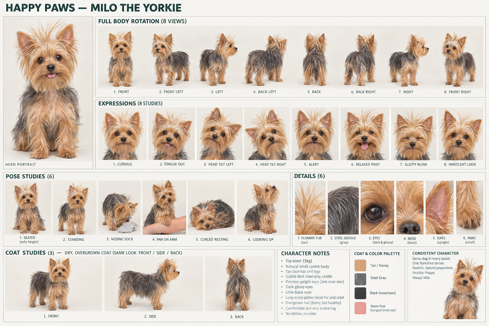

The people.
The dogs. The details.
The opening Happy Paws cast, developed from the existing storyboard. Faces, clothing, coat details and physical actions get their own references before we rebuild the individual shots.
Human realism revision: these first human studies are too polished. The next pass establishes a close-up portrait with specific complexion, age lines, eye colour and natural hair detail before rebuilding the sheet. Current artwork is preserved. Happy Little Pillow’s approved master remains unchanged.
The groomer
Hands stay with the dog.The Samoyed
The dog already in the tub.Milo’s owner
Calling from home.Milo the Yorkie
The little dog who needs a groom.The groomer
Dark hair in a loose high bun, black T-shirt, forest-green waterproof apron and black work shoes. The sheet covers her portrait, five views, eight expressions, six working poses and clothing details.

Keep consistent
She stands outside the tub, shoes on the floor. Left hand steadies the dog; right hand washes or rinses. Her hands stay with the dog when the phone rings. The bun, apron straps and sleeve length remain unchanged.
The Samoyed
Large white dog, upright triangular ears, almond-dark eyes, black nose and a curled plume tail. Angles, expressions, poses and coat stages keep the washing sequence coherent.

Keep consistent
Shampoo sits on the shoulder and upper back, then rinses away. The face stays dry and above the tub rim. Do not jump from a damp coat to a freshly brushed dry coat in the next shot.
Milo’s owner
Shoulder-length dark hair, a cream knit sweater, blue jeans and the same silver phone in her right hand. She is distinct from the groomer.
Awaiting generation
Higgsfield rejected this generation because the workspace ran out of credits. Her detailed portrait, turnaround, expression and pose brief is saved.
Keep consistent
She stays at home throughout the call. Keep the phone in her right hand and use her free left hand to steady Milo. Her hair length, sweater knit and phone do not change between cuts.
Milo the Yorkie
Tiny tan-and-steel Yorkie with upright ears, dark eyes and comically flyaway facial hair. His scruffiness supplies the joke; his behavior stays comfortable and playful.

Keep consistent
Milo stays at home beside his owner. He noses a sock or rests a paw on her forearm. He never becomes a white Samoyed, appears in the wash tub, or acquires a finished haircut halfway through the call.
{kind=link}
One scene, one clear action.
| Scene | Characters | Action to preserve |
|---|---|---|
| 2 · Hands full | Groomer + Samoyed | Both of her feet outside the tub; dog standing inside. Phone beyond splash range. |
| 3 · Can’t pick up | Groomer + Samoyed | A glance toward the phone. Hands stay working; coat wetness matches scene 2. |
| 4 · Someone answers | Happy Little Pillow + background groomer and Samoyed | Approved mascot with grooming apron beside the dry shelf. Owner does not appear here. |
| 5 · Milo needs a groom | Owner + Milo | Home location, right-hand phone, dry flyaway Yorkie. No Samoyed. |
| 6 · A time that works | Same owner + same Milo | New camera angle, unchanged outfit and phone hand. Confirmation follows her agreement. |
| 7 · Back to the dog | Groomer + Samoyed | A new rinse action and framing. Do not replay the opening shot. |
The other chapters—salon, photography and workshop—are next in the cast pass. Their sheets will keep the different people distinct. Final scene images follow the cast references.